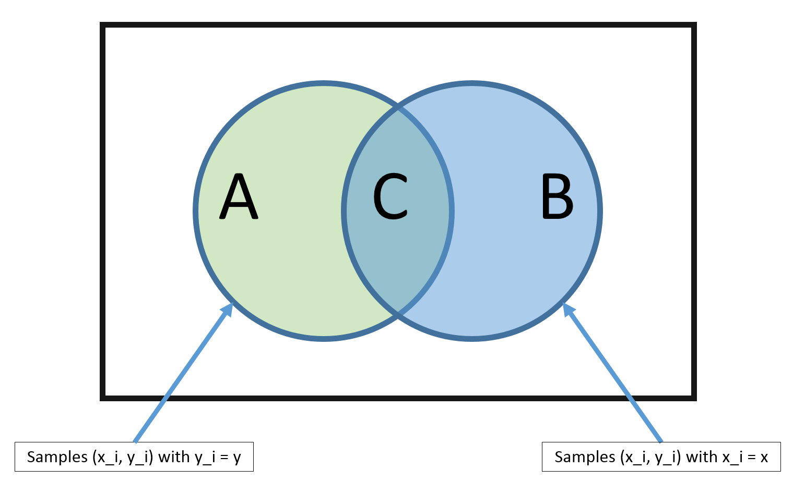

Bayes Classifier and Naive Bayes
Idea: Estimate $\hat{P}(y | \vec{x})$ from the data, then use the Bayes Classifier on $\hat{P}(y|\vec{x})$.
So how can we estimate $\hat{P}(y | \vec{x})$?
One way to do this would be to use the MLE method. Assuming that $y$ is discrete,
$$
\hat{P}(y|\vec{x}) = \frac{\sum_{i=1}^{n} I(\vec{x}_i = \vec{x} \wedge \vec{y}_i = y)}{ \sum_{i=1}^{n} I(\vec{x}_i = \vec{x})}
$$

From the above diagram, it is clear that, using the MLE method, we can estimate $\hat{P}(y|\vec{x})$ as
$$
\hat{P}(y|\vec{x}) = \frac{|C|}{|B|}
$$
But there is a big problem with this method.
Problem: The MLE estimate is only good if there are many training vectors with the same identical features as
$\vec{x}$!
In high dimensional spaces (or with continuous $\vec{x}$), this never happens! So $|B| \rightarrow 0$ and $|C| \rightarrow 0$.
To get around this issue, we can make a 'naive' assumption.
Naive Bayes
We can approach dilemma with a simple trick, and an additional assumption. The trick part is to estimate $P(y)$ and $P(\vec{x} | y)$ instead, since, by Bayes rule,
$$
P(y | \vec{x}) = \frac{P(\vec{x} | y)P(y)}{P(\vec{x})}.
$$
Recall from
Estimating Probabilities from Data
that estimating $P(y)$ and $P(\vec{x} | y)$ is called generative learning.
Estimating $P(y)$ is easy. If $Y$ takes on discrete binary values, for example, this just becomes coin tossing. We simply need to count how many times we observe each outcome (in this case each class):
$$P(y = c) = \frac{\sum_{i=1}^{n} I(y_i = c)}{n} = \hat\pi_c
$$
Estimating $P(\vec{x}|y)$, however, is not easy!
The additional assumption that we make is the Naive Bayes assumption.
Naive Bayes Assumption:
$$
P(\vec{x} | y) = \prod_{\alpha = 1}^{d} P(x_\alpha | y), \text{where } x_\alpha = [\vec{x}]_\alpha \text{ is the value for feature } \alpha
$$
i.e., feature values are independent given the label! This is a very bold assumption.
For example, a setting where the Naive Bayes classifier is often used is spam filtering. Here, the data is emails and the label is spam or not-spam. The Naive Bayes assumption implies that the words in an email are conditionally independent, given that you know that an email is spam or not. Clearly this is not true. Neither the words of spam or not-spam emails are drawn independently at random. However, the resulting classifiers can work well in prctice even if this assumption is violated.
So, for now, let's pretend the Naive Bayes assumption holds.
Then the Bayes Classifier can be defined as
\begin{align}
h(\vec{x}) &= argmax_y P(y | \vec{x}) \\
&= argmax_y \; \frac{P(\vec{x} | y)P(y)}{P(\vec{x})} \\
&= argmax_y \; P(\vec{x} | y) P(y) && \text{($P(\vec{x})$ does not depend on $y$)} \\
&= argmax_y \; \prod_{\alpha=1}^{d} P(x_\alpha | y) P(y) && \text{(by the naive assumption)}\\
&= argmax_y \; \sum_{\alpha = 1}^{d} log(P(x_\alpha | y)) + log(P(y)) && \text{(as log is a monotonic function)}
\end{align}
Estimating $log(P(x_\alpha | y))$ is easy as we only need to consider one dimension. And estimating $P(y)$
is not affected by the assumption.
Estimating $P([\vec{x}]_\alpha | y)$
Now that we know how we can use our assumption to make the estimation of $P(y|\vec{x})$ tractable.
There are 3 notable cases in which we can use our naive Bayes classifier.
Case #1: Categorical features
Features:
$$[\vec{x}]_\alpha \in \{f_1, f_2, \cdots, f_{K_\alpha}\}$$
Each feature $\alpha$ falls into one of $K_\alpha$ categories.
(Note that the case with binary features is just a specific case of this, where $K_\alpha = 2$.) An example of such a setting may be medical data where one feature could be gender (male / female) or marital status (single / married / widowed).
Model $P(x_\alpha \mid y)$:
$$
P(x_{\alpha} = j | y=c) = [\theta_{jc}]_{\alpha} \\
\text{ and } \sum_{j=1}^{K_\alpha} [\theta_{jc}]_{\alpha} = 1
$$
where $[\theta_{jc}]_{\alpha} $ is the probability of feature $\alpha$ having the value $j$, given that the label is $c$.
And the constraint indicates that $x_{\alpha}$ must have one of the categories $\{1, \dots, K_\alpha\}$.
Parameter estimation:
\begin{align}
[\hat\theta_{jc}]_{\alpha} &= \frac{\sum_{i=1}^{n} I(y_i = c) I(x_{i\alpha} = j) + l}{\sum_{i=1}^{n} I(y_i = c) + lK_\alpha},
\end{align}
where $x_{i\alpha} = [\vec{x}_i]_\alpha$ and $l$ is a smoothing parameter.
Training the Naive Bayes classisifer corresponds to estimating $\vec{\theta}_{jc}$ for all $j$ and $c$ and storing them in the respective conditional probability tables (CPT). Also note that by setting $l=0$ we get an MLE estimator, $l>0$ leads to MAP. If we set $l= +1$ we get Laplace smoothing.
Prediction:
$$
argmax_y \; P(y=c \mid \vec{x}) \propto argmax_y \; \hat\pi_c \prod_{\alpha = 1}^{d} [\hat\theta_{jc}]_\alpha
$$
Case #2: Multinomial features
Features:
\begin{align}
x_\alpha \in \{0, 1, 2, \dots, m\} \text{ and } m = \sum_{\alpha = 1}^d x_\alpha
\end{align}
Each feature $\alpha$ represents a count and m is the length of the sequence.
An example of this could be the count of a specific word $\alpha$ in a document of length $m$ and $d$ is the size of the vocabulary.
Model $P(\vec{x} \mid y)$:
Use the multinomial distribution
$$
P(\vec{x} \mid m, y=c) = \frac{m!}{x_1! \cdot x_2! \cdot \dots \cdot x_d!} \prod_{\alpha = 1}^d
\left(\theta_{\alpha c}\right)^{x_\alpha}
$$
where $\theta_{\alpha c}$ is the probability of selecting $x_\alpha$ and $\sum_{\alpha = 1}^d \theta_{\alpha c} =1$.
So, we can use this to generate a spam email, i.e., a document $\vec{x}$ of class $y = \text{spam}$ by picking $m$ words independently at random from the vocabulary of $d$ words using $P(\vec{x} \mid y = \text{spam})$.
Parameter estimation:
\begin{align}
\hat\theta_{\alpha c} = \frac{\sum_{i = 1}^{n} I(y_i = c) x_{i\alpha} + l}{\sum_{i=1}^{n} I(y_i = c) \sum_{\beta = 1}^{d} x_{i\beta} + l \cdot d }
\end{align}
where the numerator sums up all counts for feature $x_\alpha$ and the denominator sums up all counts of all features across all data points. E.g.,
$$
\frac{\text{# of times word } \alpha \text{ appears in all spam emails}}{\text{# of words in all spam emails combined}}.
$$
Again, $l$ is the smoothing parameter.
Prediction:
$$
argmax_y \; P(y = c \mid \vec{x}) \propto argmax_y \; \hat\pi_c \prod_{\alpha = 1}^d \hat\theta_{\alpha c}^{x_\alpha}
$$
Case #3: Continuous features (Gaussian Naive Bayes)
Features:
\begin{align}
x_\alpha \in \mathbb{R} && \text{(each feature takes on a real value)}
\end{align}
Model $P(x_\alpha \mid y)$: Use Gaussian distribution
\begin{align}
P(x_\alpha \mid y=c) = \mathcal{N}\left(\mu_{\alpha c}, \sigma^{2}_{\alpha c}\right) = \frac{1}{\sqrt{2 \pi} \sigma_{\alpha c}} e^{-\frac{1}{2} \left(\frac{x_\alpha - \mu_{\alpha c}}{\sigma_{\alpha c}}\right)^2}
\end{align}
Note that the model specified above is based on our assumption about the data - that each feature $\alpha$ comes from a class-conditional Gaussian distribution.
Other specification could be used as well.
Parameter estimation:
\begin{align}
\mu_{\alpha c} &\leftarrow \frac{1}{n_c} \sum_{i = 1}^{n} I(y_i = c) x_{i\alpha} && \text{where $n_c = \sum_{i=1}^{n} I(y_i = c)$} \\
\sigma_{\alpha c}^2 &\leftarrow \frac{1}{n_c} \sum_{i=1}^{n} I(y_i = c)(x_{i\alpha} - \mu_{\alpha c})^2
\end{align}
Naive Bayes is a linear classifier
1. Suppose that $y_i \in \{-1, +1\}$ and features are multinomial
We can show that
$$
h(\vec{x}) = argmax_y \; P(y) \prod_{\alpha - 1}^d P(x_\alpha \mid y) = sign(\vec{w}^\top \vec{x} + b)
$$
That is,
$$
\vec{w}^\top \vec{x} + b > 0 \Longleftrightarrow h(\vec{x}) = +1.
$$
As before, we define $P(x_\alpha|y=+1)\propto\theta_{\alpha+}^{x_\alpha}$ and $P(Y=+1)=\pi_+$:
\begin{align}
[\vec{w}]_\alpha &= log(\theta_{\alpha +}) - log(\theta_{\alpha -}) \\
b &= log(\pi_+) - log(\pi_-)
\end{align}
If we use the above to do classification, we can compute for $\vec{w}^\top \cdot \vec{x} + b$
Simplifying this further leads to
\begin{align}
\vec{w}^\top \cdot \vec{x} + b > 0 &\Longleftrightarrow \sum_{\alpha = 1}^{d} [\vec{x}]_\alpha (log(\theta_{\alpha +}) - log(\theta_{\alpha -})) + log(\pi_+) - log(\pi_-) > 0 \\
&\Longleftrightarrow \frac{\prod_{\alpha = 1}^{d} P([\vec{x}]_\alpha | Y = +1)\pi_+}{\prod_{\alpha =1}^{d}P([\vec{x}]_\alpha | Y = -1)\pi_-} > 1 \\
&\Longleftrightarrow P(Y = +1 | \vec{x}) > P(Y = -1 | \vec{x}) && \text{(By our naive Bayes assumption)} \\
&\Longleftrightarrow h(\vec{x}) = +1 && \text{(By definition of $h(\vec{x})$)}
\end{align}
2. In the case of continuous features (Gaussian Naive Bayes), we can show that
$$
P(y \mid \vec{x}) = \frac{1}{1 + e^{-y (\vec{w}^\top \vec{x} +b) }}
$$
This model is also known as logistic regression. NB and LR produce asymptotically the same model if the Naive Bayes assumption holds.